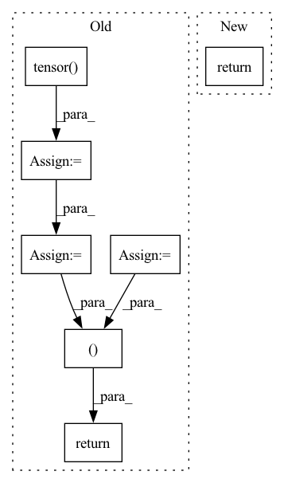

Pattern ID :27492

Before Change
total_loss = total_loss + loss_pos
// regularization: loss over negative regions.
loss_neg = torch.tensor([0.])
if self.reg_loss is not None:
assert scores_neg is not None, "ERROR"
loss_neg = self.reg_loss(scores_neg)
total_loss = total_loss + self.lambda_neg * loss_neg
// constraint on background size.
loss_sz_con = torch.tensor([0.])
bsz = float(scores_pos.shape[0])
if self.use_size_const:
loss_sz_con = self.size_const(masks_pred=masks_pred) / bsz
total_loss = total_loss + loss_sz_con
return total_loss, loss_pos, loss_neg, loss_cl_seg
def __str__(self):
return "{}()".format(self.__class__.__name__,)
After Change
):
if self.dataset_name == constants.GLAS:
return self.forward_glas(
scores_pos=scores_pos,
sc_cl_se=sc_cl_se,
labels=labels,
In pattern: SUPERPATTERN
Frequency: 4
Non-data size: 7
Instances
Fragment ID: 81600575
Project Name: sbelharbi/deep-wsl-histo-min-max-uncertainty
Commit Name: 8af2e1a0370e2defdb7fb3f0930777daafaa5e2f
Time: 2021-12-19
Author: soufiane.belharbi@gmail.com
File Name: deepmil/criteria.py
M Class Name: TrainLoss
N Class Name: TrainLoss
M Method Name: forward(7)
N Method Name: forward(6)
M Parent Class: nn.Module
N Parent Class: nn.Module
M File Name: deepmil/criteria.py
N File Name: deepmil/criteria.py
M Start Line: 186
M End Line: 209
N Start Line: 398
N End Line: 420
'>
Before Change
inputs, input_lengths, compute_targets, compute_target_lengths
)
loss = self.cal_loss(outputs, targets, output_lengths, target_lengths)
predicts = self.forward(inputs, input_lengths)
predicts = [self.text_process.int2text(sent) for sent in predicts]
targets = [self.text_process.int2text(sent) for sent in targets]
list_wer = torch.tensor(
[self.cal_wer(i, j).item() for i, j in zip(predicts, targets)]
)
wer = torch.mean(list_wer)
if batch_idx % 100 == 0:
self.log_output(predicts[0], targets[0], wer)
self.log("val_loss", loss)
self.log("val_batch_wer", wer)
return loss, wer
def test_step(self, batch, batch_idx):
(
inputs,
After Change
self.log_output(predict_sequences[0], label_sequences[0], wer)
self.log("test wer", wer)
return loss
def test_step(self, batch: Tensor, batch_idx: int):
inputs, input_lengths, targets, target_lengths = batch
'>
Fragment ID: 81600557
Project Name: manhph2211/vistt
Commit Name: 742be9424d91058a3c3e25adc4db742534fffab3
Time: 2022-08-30
Author: manhph5@vingroup.net
File Name: VASR/local/src/engine/trainer.py
M Class Name: ConformerModule
N Class Name: ConformerModule
M Method Name: validation_step(3)
N Method Name: validation_step(3)
M Parent Class: BaseModel
N Parent Class: pl.LightningModule
M File Name: VASR/local/src/engine/trainer.py
N File Name: VASR/local/src/engine/trainer.py
M Start Line: 72
M End Line: 103
N Start Line: 106
N End Line: 126
'>
Before Change
train_inputs = torch.tensor(train_input)
train_type_ids = torch.tensor(train_type_id)
train_masks = torch.tensor(train_att_mask)
train_labels = torch.tensor(train_label)
// Create the DataLoader for our training set.
train_data = TensorDataset(train_inputs, train_type_ids, train_masks, \
train_labels)
train_sampler = RandomSampler(train_data)
train_dataloader = DataLoader(train_data, sampler=train_sampler, \
batch_size=self.batch_size)
// Convert all validation inputs and labels into torch tensors
validation_inputs = torch.tensor(valid_input)
validation_type_ids = torch.tensor(valid_type_id)
validation_masks = torch.tensor(valid_att_mask)
validation_labels = torch.tensor(valid_label)
// Create the DataLoader for our validation set.
validation_data = TensorDataset(validation_inputs, validation_type_ids,\
validation_masks, validation_labels)
validation_sampler = SequentialSampler(validation_data)
validation_dataloader = DataLoader(validation_data, \
sampler=validation_sampler, \
batch_size=self.batch_size)
return train_dataloader, validation_dataloader
def get_accuracy(self, preds, labels):
Compute the accuracy of binary predictions.
After Change
sampler = SequentialSampler(data)
dataloader = DataLoader(data, sampler=sampler, batch_size=self.batch_size)
return dataloader
def get_accuracy(self, preds, labels):
Compute the accuracy of binary predictions.
'>
Fragment ID: 81600345
Project Name: yuanbit/finbert-qa
Commit Name: a4844511b0075db8aaf855486bb22046ba74669c
Time: 2020-04-11
Author: bithiahy@gmail.com
File Name: src/finbert_qa.py
M Class Name: PointwiseBERT
N Class Name: PointwiseBERT
M Method Name: get_dataloader(3)
N Method Name: get_dataloader(1)
M Parent Class:
N Parent Class:
M File Name: src/finbert_qa.py
N File Name: src/finbert_qa.py
M Start Line: 176
M End Line: 224
N Start Line: 150
N End Line: 182
'>
Before Change
inputs, input_lengths, compute_targets, compute_target_lengths
)
loss = self.cal_loss(outputs, targets, output_lengths, target_lengths)
predicts = self.forward(inputs, input_lengths)
predicts = [self.text_process.int2text(sent) for sent in predicts]
targets = [self.text_process.int2text(sent) for sent in targets]
list_wer = torch.tensor(
[self.cal_wer(i, j).item() for i, j in zip(predicts, targets)]
)
wer = torch.mean(list_wer)
if batch_idx % 100 == 0:
self.log_output(predicts[0], targets[0], wer)
self.log("test_loss", loss)
self.log("test_batch_wer", wer)
return loss, wer
def log_output(self, predict, target, wer):
print("=" * 50)
print("Sample Predicts: ", predict)
After Change
self.log_output(predict_sequences[0], label_sequences[0], wer)
self.log("test wer", wer)
return loss
'>
Fragment ID: 81600667
Project Name: manhph2211/vistt
Commit Name: 742be9424d91058a3c3e25adc4db742534fffab3
Time: 2022-08-30
Author: manhph5@vingroup.net
File Name: VASR/local/src/engine/trainer.py
M Class Name: ConformerModule
N Class Name: ConformerModule
M Method Name: test_step(3)
N Method Name: test_step(3)
M Parent Class: BaseModel
N Parent Class: pl.LightningModule
M File Name: VASR/local/src/engine/trainer.py
N File Name: VASR/local/src/engine/trainer.py
M Start Line: 105
M End Line: 136
N Start Line: 128
N End Line: 148